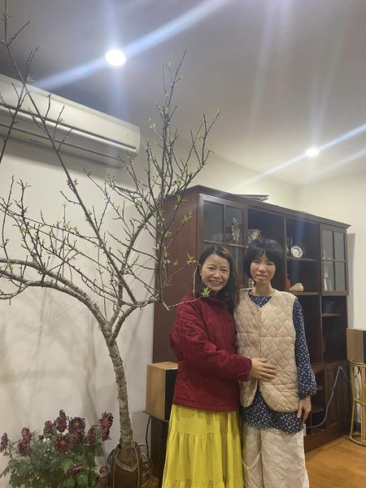

Cách tiếp cận trong các vấn đề của mình thường sẽ là: (1) Khẳng định vấn đề; (2) Tìm các yếu tố ảnh hưởng đến vấn đề và (3) Tìm các giải pháp.
Trong khoa học, ví dụ nghiên cứu về y tế công cộng, đó là kiểu tư duy: (1) Đâu là vấn đề y tế cần giải quyết, tại sao? (2) Những yếu tố nào ảnh hưởng đến vấn đề đó? Và (3) Phương pháp giải quyết vấn đề là gì…
Có lẽ nghiên cứu và cuộc sống thực tế cũng không khác nhau là mấy về cách tư duy, nên mình mạnh dạn áp dụng tư duy đó vào trong các chia sẻ của mình, hy vọng không quá phức tạp, hihi!
Có nhiều trẻ đã biết đọc nhưng không chịu đọc sách. Lý do là đâu và mình phải làm như thế nào để cải thiện tình trạng này?
Một số lý do khiến trẻ không thích đọc sách bao gồm:
Lý do đầu tiên có thể là sách không quyến rũ được trẻ.
Các hình ảnh động từ mạng xã hội như Facebook, Tiktok, Youtube hoặc video game và các cái trò chơi online thì dễ quyến rũ hơn, chính vì vậy đây là các nguồn cạnh tranh khá lớn so với những con chữ nằm bất động trong trang sách.
Ba mẹ cần giúp trẻ tập bớt thời gian sử dụng các công nghệ và dành thời gian để đọc sách.
Mình sẽ có thời gian để chia sẻ nhiều hơn về chủ đề "cai nghiện màn hình", thông qua các cuộc chuyện trò với các chuyên gia tâm lý. Riêng nhà mình, thì các bạn nhỏ rất thích, rất mê màn hình, nhưng thời gian sử dụng rất giới hạn và chương trình được chọn lọc. Cho đến hiện nay, "quyền" sử dụng điện thoại không thuộc về các bạn ấy, mà là ba mẹ. Tụi mình là người lớn, nên sử dụng điện thoại, màn hình tivi là quyền của mình, hơn là "các bạn ấy đòi"!
Xem điện thoại, ti vi để dụ ăn cũng không bao giờ có mặt trong nhà mình. Mình sẽ chia sẻ thêm về chủ đề ấy sau nhé!
Lý do thứ hai là trẻ không hứng thú với sách
Một phần là sách trẻ chọn không phù hợp. Bạn có thể tham gia hội nhóm cha mẹ đọc sách để có thêm kinh nghiệm chọn sách cho con. Ở VN thì mình ít khi đến thư viện địa phương, và thủ thư ở nước mình cũng không giúp gì được cho việc chọn sách cho con.
Tuy vậy, gia đình mình cũng đi thư viện tổng hợp TPHCM và cho các con làm thẻ. Đó cũng là cách gúp con chọn đọc hoặc ở trong môi trường nhiều sách để chọn.
Lí do thứ ba là trẻ thấy việc đọc không ích lợi gì.
Có thể bé không cảm nhận được niềm vui của sách.
Ở nhà mình, lúc đọc cuốn sách có tên cuốn sách không tranh, hai cha con cười nắc nẻ cùng nhau. Hoặc cuốn Thân cây kỳ diệu, mấy cha con gõ vào thân cây và cùng khám phá niềm vui…. Có lẽ những điều này trẻ cần được cảm nhận…. Để lúc nào cũng đòi ba mẹ đọc sách cho nghe….
Ngoài ra, với các bé lớn hơn, có thể ba mẹ chọn cho bé những cuốn phức tạp hơn một chút so với trình độ của bé để em có thể cảm nhận được sự vui thú trong việc khám phá điều mới.
Lí do thứ tư là nhiều khi đọc sách là gánh nặng
Nhiều chữ quá, hoặc phức tạp quá mức cũng là một khó khăn khiến trẻ chùn bước hoặc chính người lớn chán đọc.
Chọn những cuốn có hình thức đẹp, có hình minh họa dễ thương, bắt đầu từng bước nhỏ rồi nâng dần lên, là cách tập.
Một số giải pháp nếu trẻ không chịu đọc sách mà mình tổng hợp và dịch lại:
Chọn sách có nhân vật chính có cá tính theo cách mà trẻ muốn
Chọn sách có tiết tấu nhanh, hành động
Chọn sách theo loạt sách hoặc sách đơn
Chọn sách có tình tiết hoặc minh họa hài hước
Chọn sách kiểu truyện tranh…
Chú ý quan trọng:
Nhà không ai đọc sách nên trẻ không có thói quen, không biết cách….
Hôm nay mình nói chuyện với chị Nguyễn Bích Lan, một dịch giả, tác giả viết sách. Chị nổi tiếng với cuốn "Không gục ngã', một cuốn tự truyện của mình. Chị có cho lời khuyên, gia đình duy trì thói quen đọc sách là một giải pháp để giúp trẻ đọc. Chị có một cộng đồng, trong đó khuyến khích cha mẹ và ông bà cùng con đọc sách liên tục trong 30 ngày, chị tặng đủ sách để gia đình đọc trong 30 ngày. Nhiều kết quả thú vị lắm! Trong đó có việc, có em bé lớp 1 trước đó đọc chưa rành, sau 30 ngày còn đọc cho mẹ nghe, sau đợt dịch CoVid-19 với hoạt động đọc sách liên tục trong 30 ngày!
Và một số tips khác nữa, nếu bạn có cách nào thú vị, chia sẻ ở comment cùng tụi mình ha!
P/S: Nhi Nhi sẽ đăng bài vào các ngày t2-t5 hàng tuần. Cuối tuần thì dành thời gian cho con. Mong mọi người sẽ theo dõi và ủng hộ page của Tiến sĩ 18 tuổi nha. Cảm ơn cả nhà!
Nhi Nhi thường đặt mua sách từ chị Bích Lan. Chị ấy sẽ giúp Nhi chọn sách theo tuổi, giới, sở thích của con!
